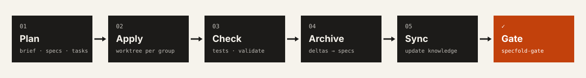
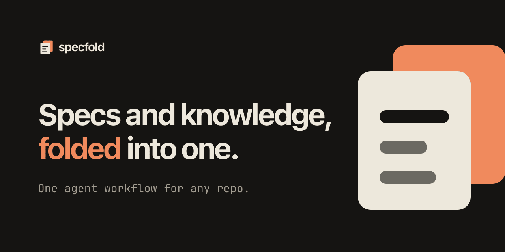

Brand kit · Ink & Vermilion
Warm paper, near-black ink and one signal colour. Every change starts from a brief the user confirmed; specs carry the contract, the knowledge bundle carries the context.
Logo
Colour (current theme)
Type
Rather ask than assume
IBM Plex Sans for headings, body and interface. Base 16 px, line height 1.5.
JetBrains Mono for code, paths and labels — knowledge/decisions/self-hosting.md
Interface
Diagrams · Blocks

GitHub social preview · 1280×640

CLI